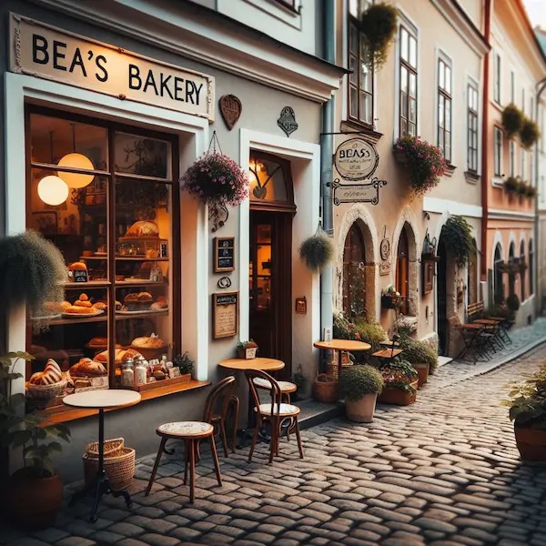

Founded in 1867 by the determined and visionary Bea Eriksdotter, Bea's Bakery has a rich history steeped in tradition and resilience.
At just 26 years old, Bea faced skepticism from many who doubted her ability to succeed in the competitive world of baking.
However, through sheer hard work and perseverance, she not only kept the bakery running but turned it into a beloved local institution.
In its early days, Bea's Bakery was renowned for its freshly baked bread, which quickly became a staple in the community.
Bea's dedication to quality and her innovative recipes earned her a loyal customer base, and the bakery flourished.
By 1958, Bea's Bakery had evolved into a charming café, reflecting the changing tastes of its patrons.
The focus shifted from bread to an array of delightful sweets and pastries, making it the perfect spot for a cozy afternoon treat.
The café's warm and inviting atmosphere, combined with its picturesque location on a cobblestone street, has made it a favorite gathering place for generations.
Today, Bea's Bakery continues to honor Bea's legacy by offering a delightful selection of baked goods and maintaining the same cozy, welcoming environment that has charmed visitors
for over a century. Whether you're enjoying a cup of coffee with friends or indulging in a delicious pastry, Bea's Bakery is a testament to the enduring power of passion and perseverance.
(from the left)
Maria Svensson: Maria is the heart and soul of Bea's Bakery. With her warm smile and exceptional baking skills, she ensures every customer feels at home.
Her specialty is crafting the most delightful pastries that keep people coming back for more.
Chtulhu-Man: Despite his unusual appearance, Chtulhu-Man is a beloved member of the team. His friendly demeanor and willingness to help with anything make him a
favorite among regulars. He might look like a mythical creature, but his kindness is very real.
Isabella Eriksdotter: Isabella is the great-great-great-granddaughter of Bea, the founder of the cafe. She carries on the family tradition with pride,
bringing a touch of history and a lot of love to everything she does. Her connection to the bakery's legacy is evident in every delicious bite.
Lisa Grönberg: Lisa is the creative genius behind the bakery's innovative recipes. Always experimenting with new flavors and techniques,
she keeps the menu exciting and fresh. Her passion for baking is matched only by her dedication to making every customer experience special.